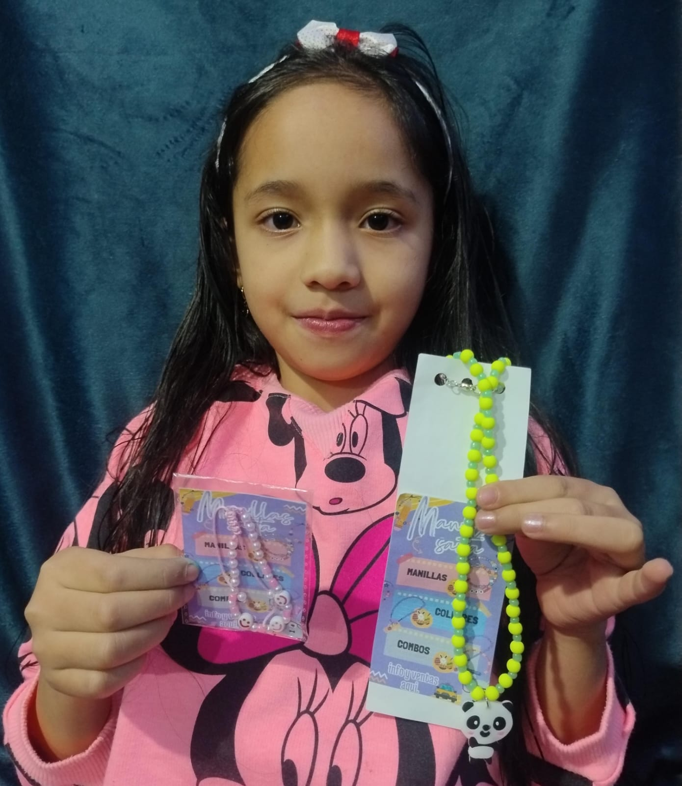
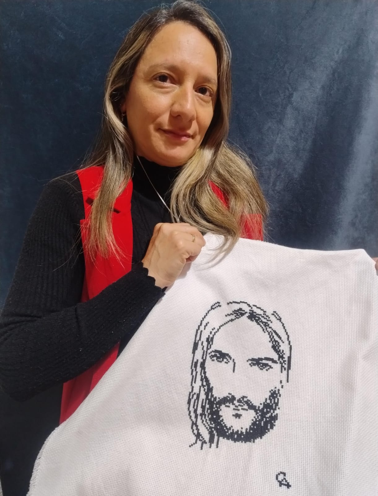

Quiénes Somos
Somos un pequeño emprendimiento de manillas, collares, aretes y cuadros, todo hecho a mano y con mucho cariño, dónde trabajamos en nuestros tiempos libres para relajarnos y hacer lo que nos gusta.
Nuestro Proceso
1
Materiales fáciles de conseguir
Usamos hilo-caucho, perlitas, pepitas, para las manillas, y demás objetos que puedes conseguir en casi cualquier almacén de costura.
2
Técnicas Tradicionales
Todos los productos son hechos con técnicas sencillas y tradicionales.
3
Detalles Personalizados
Aunque algunas de las piezas son hechas siguiendo un estándar, los clientes tienen la posibilidad de personalizarlas.
Conoce a Nuestras Artesanas

Sara Blanco
Estudiante y creadora de manillas - 1 año de experiencia
"Me gusta hacer manillas y collares bonitos para los niños"

Alexandra Castillo
Aficionada a la costura - 6 años de experiencia
"Lo que hago es un arte que te libera física y espiritualmente"